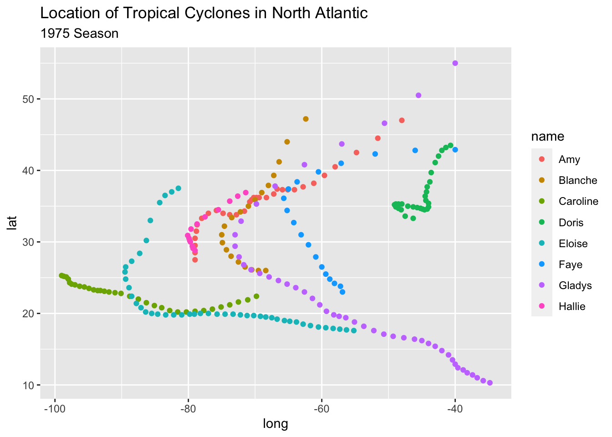
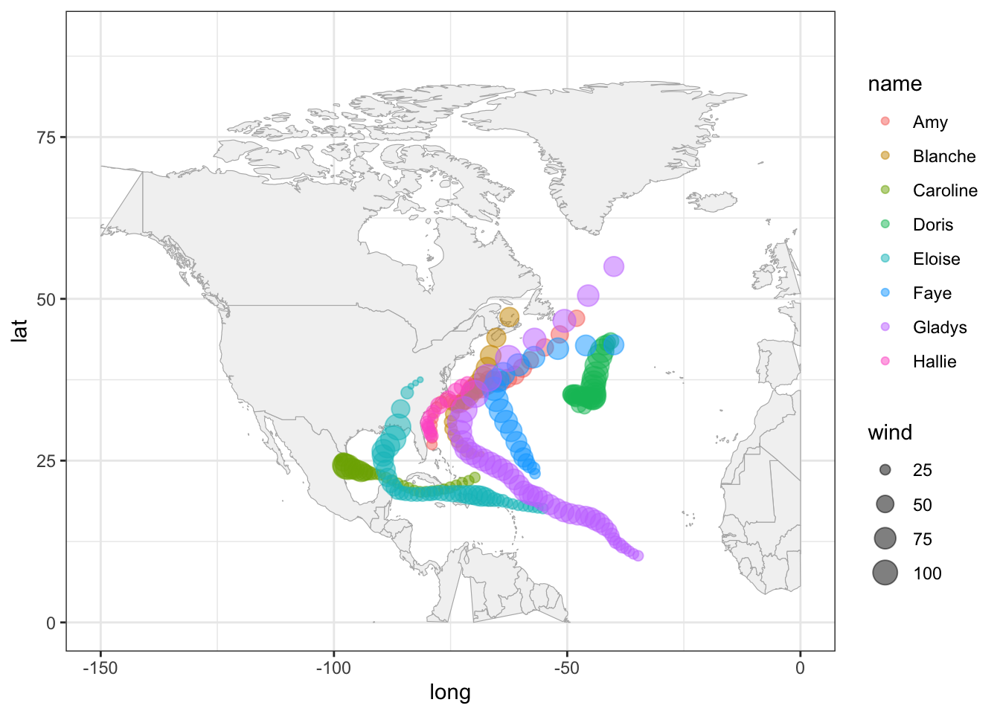

17 Basic Maps
In this chapter you will need the following packages:
library(tidyverse) # for syntactic manipulation of tables
library(maps) # for drawing basic geographical mapsand the following objects:
storms75 <- filter(storms, year == 1975)17.1 Graphing Maps
In this part, we give a basic exposure to plotting maps with "ggplot2"
and "maps".
17.1.1 Plotting location of storm records
For illustration purposes, we continue using the data frame storms75. Having
latitude and longitude, we can make a scatter plot to see the location of
the storm records. Recall that the ggplot function to do this is
geom_point(). To distinguish each storm, we can color the dots by taking into
account the different storm names. This involves mapping the column name
to the color attribute:
ggplot(data = storms75, aes(x = long, y = lat, color = name)) +
geom_point() +
labs(title = "Location of Tropical Cyclones in North Atlantic",
subtitle = "1975 Season")
Keep in mind that the previous command can also be written as:
# alternative ways to write equivalent commands
ggplot(data = storms75) +
geom_point(aes(x = long, y = lat, color = name)) +
labs(title = "Location of Tropical Cyclones in North Atlantic",
subtitle = "1975 Season")
# similarly
ggplot() +
geom_point(data = storms75, aes(x = long, y = lat, color = name)) +
labs(title = "Location of Tropical Cyclones in North Atlantic",
subtitle = "1975 Season")The above scatter plot is a good starting point to visualize the location of the storm records, but it would be nice to have an actual image of a map. Let’s see how to do this in the following subsections.
17.1.2 Basic World Map
One of the oldest ways to plot maps in R is with the package "maps". This
package comes with various functions that allow you to create maps, without
the need to use "ggplot2" or any other tidyverse tool. "maps"also contains
data sets of maps that can be used by "ggplot2" to visualize geospatial data.
In order to use ggplot() with one of the data sets in "maps", the first
step involves creating a data frame via the function map_data(). This function
turns data from the "maps" package into a table suitable for plotting with
"ggplot2". For instance, to graph a map of the world—based on the "world"
map—we first create a data frame:
# world map data
world_map <- map_data("world")
class(world_map)## [1] "data.frame"Once we have this data, we can use it with ggplot() and a geom_polygon()
layer like this:
# a default world map
ggplot() +
geom_polygon(data = world_map,
aes(x = long, y = lat, group = group))
In the above command, notice how we specify the data argument inside
geom_polygon() instead of inside ggplot(). We do this because the data
frame world_map is used to graph the layer of the map. We still need to add
another layer—via geom_point()—for the coordinates indicating the
positions of each storm.
To handle the code more easily, let’s modify the map, and create a "ggplot"
object called gg_world. We’ll use this object as our “canvas” for plotting
the storm locations:
# map "canvas" stored as gg_world
gg_world <- ggplot() +
geom_polygon(data = world_map,
aes(x = long, y = lat, group = group),
fill = "gray95", colour = "gray70", linewidth = 0.2) +
theme_bw()
gg_world
17.1.3 Mapping 1975 Storms
Now that we know how to plot a map with ggplot(), we can add the points of
the storm records. This is done with geom_point(), and specifying storms75
as the data argument inside this function. In other words, we are using two
separate data frames. One is world_map to draw the polygons of the map;
the other one is stomrs75 to graph the dots of each storm. Notice also that
there are no inputs provided to the function ggplot().
# world map, adding storms in 1975
gg_world +
geom_point(data = storms75,
aes(x = long, y = lat, color = name))
Because the analyzed hurricanes occurred in the North Atlantic basin, we can focus on that region by modifying the x-and-y axis limits:
# zoom-in
gg_world +
geom_point(data = storms75,
aes(x = long, y = lat, color = name)) +
xlim(c(-150, 0)) +
ylim(c(0, 90))
It’s worth mentioning that this zoom-in has a secondary effect of distorting
some of the polygons. For example, Alaska seems to get cut in half. Also the
polygon of Colombia is incomplete. Ignoring these distortions for now, we can
continue exploring things by taking into account more variables. For instance,
let’s map the wind speed to the size argument of points.
gg_world +
geom_point(data = storms75,
aes(x = long, y = lat, color = name, size = wind),
alpha = 0.5) +
xlim(c(-150, 0)) +
ylim(c(0, 90))
A very similar appearance can be achieved by replacing geom_point() with
geom_path():
gg_world +
geom_path(data = storms75,
aes(x = long, y = lat, color = name, linewidth = wind),
lineend = "round", alpha = 0.4) +
xlim(c(-150, 0)) +
ylim(c(0, 90))